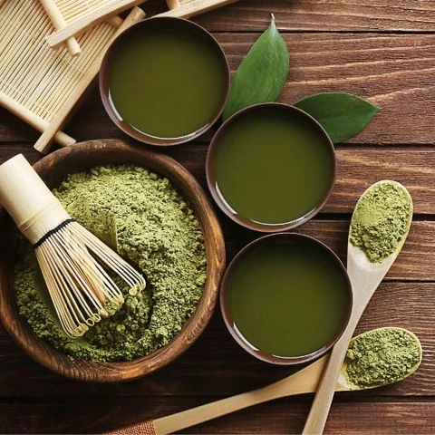

This site is about matcha.
Here is one cool fact: it was used by
Buddhist monks for meditation and Samurai for battle.
Personally, I love drinking matcha latte's whenever I get the chance.
Especially during long study sessions.
